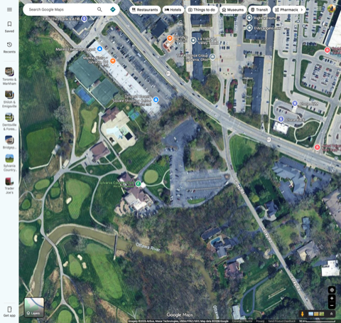
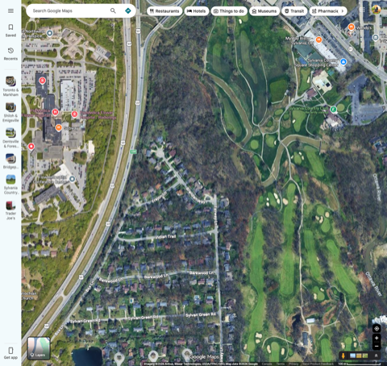

说明：AJGA Qualifier 逐洞成绩默认需要 AJGA 球员/教练账号登录才能展开，本报告数据在已登录状态下逐人抓取（女子组全部参赛选手），2019/2020/2021/2025 共 4 年、89 人次单轮成绩，逐洞 Par/码数与官方一致，总杆已与官方榜单逐一核对吻合。2023 年该球场举办的是正赛（非 Qualifier），未计入本报告。2022/2023/2024 未查到该球场的女子组 Qualifier 记录。
| 年份 | 参赛人数 | 晋级人数 | 晋级线(总杆) | 场均总杆 | 最低杆 | 最高杆 |
|---|---|---|---|---|---|---|
| 2019 | 27 | 5 | 77 (+5) | 81.31 | 73 | 94 |
| 2020 | 23 | 3 | 79 (+7) | 82.10 | 74 | 94 |
| 2021 | 19 | 4 | 75 (+3) | 79.32 | 70 | 100 |
| 2025 | 23 | 4 | 83 (+11) | 81.87 | 70 | 94 |
晋级线波动大，不能只盯一年的参照值
下图为各洞场均相对 Par 的偏离（正数=难，负数=易），中线为 Par；样本合并 2019/2020/2021/2025 全部女子组成绩。
| 洞 | Par | 码数 | 场均 | 较 Par | 难度排名 | 成绩分布(鸟/Par/柏忌/双柏忌+) |
|---|
三个结构性结论
| 球场特征 | 证据 | 训练 / 赛前对策 |
|---|---|---|
| 开局(1号)与收尾(18号)是全场两大难关，且都零/近零小鸟 | 1号 +1.09(#1难)，18号 +0.92(#2难)，18号 89轮零小鸟 | 练习场专门模拟"第一杆冷启动"；赛前热身不省略；心理预案——1号/18号目标只设定"保 par 不崩"，不强求进攻 |
| 16 号 Par5 是全场唯一的确定性得分点 | 89轮中19鸟+1鹰，难度垫底 | 重点打磨两杆到位 + 短打推攻，把这一洞当"计划内抓鸟洞"对待，其余 Par5(2号/4号/8号/17号)难度都明显更高，不能一概而论 |
| 2 号 Par5(450y)看似送分实则偏难 | 难度排#3(+0.69)，与许多短Par4接近 | 不要默认"Par5=送分洞"，450y二杆攻果岭失败率高，稳健布局优先于一味强攻 |
| 晋级线年际波动大(+3~+11)，不能死记一个数字 | 2021 晋级线75，2025 晋级线83，相差8杆 | 赛前心态锚点应是"打出自己接近70-75的最好轮次"，而非盯着某一年的具体晋级分数；场均79-82是常态基线 |
去卫星图上确认了一下。答案：是的，水是真实存在的结构性因素，但不是"每洞都靠水"，而是集中在几个特定位置。

俱乐部会所正后方就是 Ten Mile Creek（官方历史资料原名）/ 地图标注 Ottawa River 的一段支流，紧贴会所转弯而过。球场官网原文提到该球场"alongside the scenic Ten Mile Creek"建成——水系是设计原生结构，不是后来加的装饰。会所紧邻区域正是 1 号发球台 / 18 号果岭一带的动线。

拉远看整体：Ottawa River 沿球场东侧边界贯穿南北，另外会所区域有一段蜿蜒溪流穿过多个球道。树木遮挡下无法在卫星图上逐洞精确标出水线落点，但结合"第一节·难度地图"的数据看，水系位置和最难/最反常的几个洞高度重合（见下方距离建模章节的交叉验证）。
结论：水不是笼罩全场的因素，而是精准打在了 1 号（开局）、18 号（收尾）、2 号（Par5）这几个洞上——这也是为什么这几洞的"双柏忌率"会显著偏离球洞长度本身该有的难度（详见下一节）。
把每洞的柏忌率和双柏忌+率分开看（而不是只看"较 Par 平均"），能看出球洞在用哪种方式制造杆数——这直接决定训练时该练什么。
| 洞型 | 代表洞 | 柏忌率 | 双柏忌+率 | 信号解读 |
|---|---|---|---|---|
| 陷阱型 | 2 号 Par5 450y | 18.0% | 23.6% | 柏忌率全场倒数第2低，双柏忌率却排第2高——"平时打得挺顺，一旦踩雷就是大数字"的典型信号。大概率是某条具体路线上埋了水/沙坑，正常走位没事，一旦贪线或风向偏了就直接掉进去。 |
| 温水煮青蛙型 | 7 号 Par4 320y | 48.3% | 10.1% | 全场柏忌率最高，但双柏忌率不算突出。320y 是全场最短 Par4 之一，理应轻松，却几乎一半人吃柏忌——不是打不到，是打不准（窄球道/小果岭/角度刁），典型的"松懈型丢分"，心理上最容易被忽视。 |
| 全面碾压型 | 1 号 / 18 号 Par4 | 47.2% / 44.9% | 29.2% / 20.2% | 柏忌率和双柏忌率都名列前茅——不是单一原因，而是水障碍 + 长度 + 心理压力（开局/收尾）叠加。这两洞需要的不是技术突破，而是战略降级：主动接受保par甚至柏忌，避免用进攻姿态去博一个小概率的鸟。 |
三条教训
⚠️ 重要说明：AJGA Qualifier 不公开逐杆 / 击球追踪数据（无真实开球距离、上果岭数、失误类型记录），以下是基于公开的美国青少年女子高尔夫击球距离统计做的建模估算，不是实测数据。用途是给训练重点提供方向，不是精确诊断。
| 洞 | Par | 码数 | 中段选手攻果岭剩余 | 争线选手攻果岭剩余 | 难度排名 | 推断信号 |
|---|---|---|---|---|---|---|
| 1 | 4 | 346 | 171y(长铁) | 151y(中铁) | #1 | 距离不长，难度却全场最高 → 非距离因素(水障碍+窄球道+小果岭+开局心理) |
| 2 | 5 | 450 | 125y(短挖起) | 90y(挖起) | #3 | 第三杆本应是送分距离，双柏忌率却全场第2高 → 典型障碍陷阱，不是打不到而是踩雷 |
| 3 | 3 | 159 | 159y(全洞) | 159y(全洞) | #5 | 中距离Par3标准杆型，难度偏高 → 果岭/沙坑防守强，精度问题而非距离问题 |
| 7 | 4 | 320 | 145y(中铁) | 125y(短铁) | #4 | 全场最短Par4之一，柏忌率却最高 → 选杆/瞄准松懈，短距离不等于易打 |
| 13 | 4 | 365 | 190y(球道木/长铁) | 170y(长铁) | #7 | 攻果岭距离偏长 → 典型"长二杆精度下降"型难度 |
| 15 | 4 | 363 | 188y(球道木/长铁) | 168y(长铁) | #8 | 同上，长二杆型难度 |
| 18 | 4 | 371 | 196y(球道木) | 176y(长铁) | #2 | 全场最长的Par4二杆攻果岭距离 → 距离+水+收尾心理三重叠加，零小鸟印证极难保住小球杆数 |
| 16 | 5 | 414 | 89y(小挖起) | 54y(短挖起) | #18 | 三杆结构下第三杆已是精准短挖起距离 → 公认送分洞，19次小鸟印证 |
三类失误归因（按洞型分组）
这套球场的女子组难度呈明显"两端难、中段有机会"格局：开局 1 号和收尾 18 号是心理与技术双重考验，几乎没人能在这两洞讨到便宜；16 号 Par5 则是全场公认的送分洞，能不能抓住它往往决定当天成绩的上限。水系（Ten Mile Creek / Ottawa River）在会所周边确实存在且真实影响 1/18/2 号洞，但并非笼罩全场；其余大部分洞的难度更多来自果岭防守和二杆精度而非水障碍本身。4 年场均稳定在 +7～+10，真正拉开差距的是开局是否稳住、收尾是否顶住、16 号是否吃满、以及能否针对 2 号这类陷阱洞单独制定保守策略这四件事。